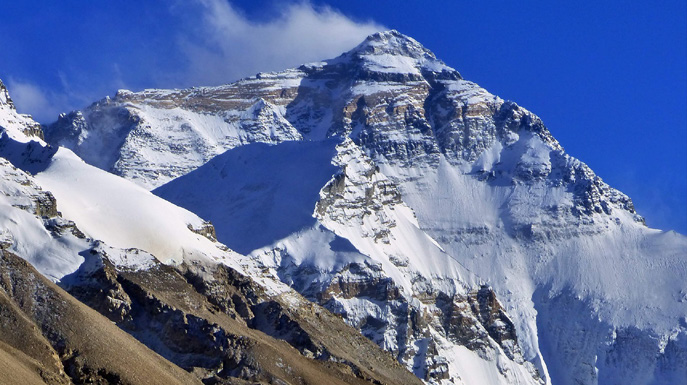
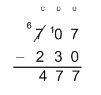
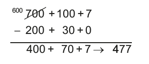
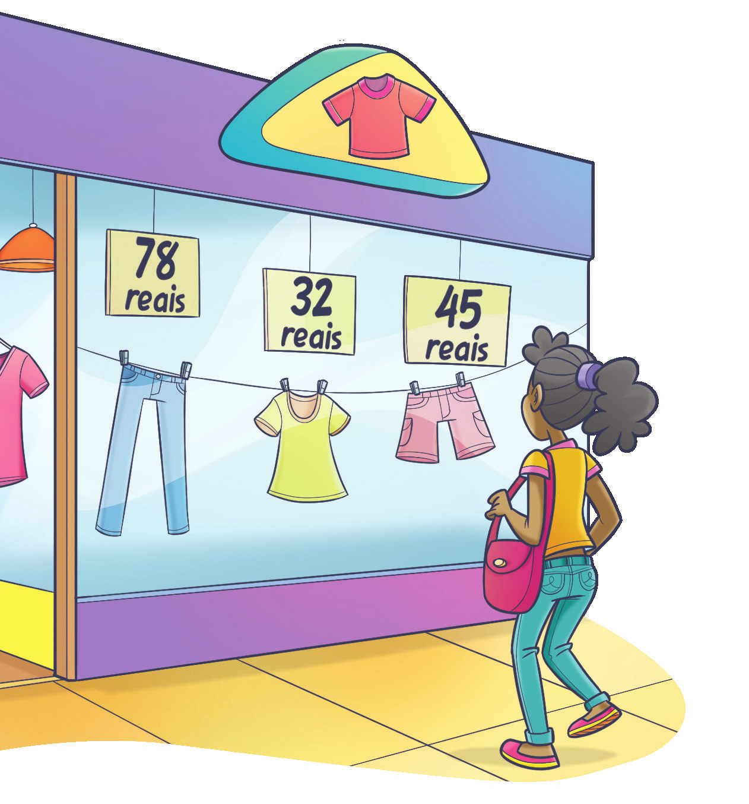
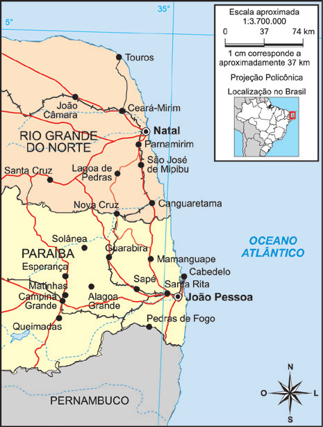
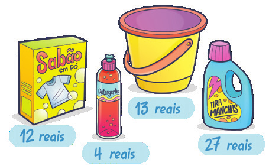
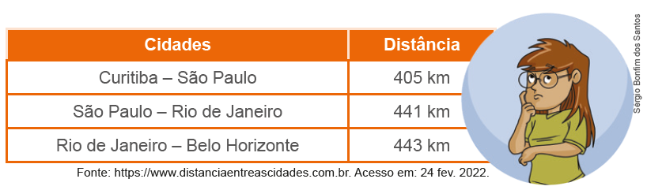

46
UNIDADE 2 - Operações com números naturais

ASCOM/MCTI
47
A Floresta Amazônica, maior floresta tropical do planeta, apresenta diferentes tipos de matas e uma infinidade de espécies vegetais e animais.
Sua área total é de 7 584 421 quilômetros quadrados, aproximada-mente 20 vezes maior que o território do Japão. A maior parte dessa floresta está em território brasileiro, ocupando 5 217 423 quilômetros quadrados.
CONVERSE
1. Em sua opinião, qual é a importância da Floresta Amazônica para a humanidade?
2. Quantos quilômetros quadrados de floresta não estão em território brasileiro? Qual operação matemática você utilizou para realizar esse cálculo?
3. De acordo com as informações do texto, é possível calcular a área do Japão? Como você faria esse cálculo?
4. Quais as operações matemáticas que você conhece?
48
CAPÍTULO 1 - Adição e subtração de números naturais
Adição
Observe a reportagem a seguir.
Censo de botos em rios do PA quer medir impacto de construção de barragens
Profissionais do Instituto Mamirauá e da ONG WWF (World Wide Fund) percorreram 577 km na Bacia do Tapajós, no Pará, para documentar a distribuição e estimar a abundância de botos na região.
Resultados preliminares foram divulgados pelas instituições, que avistaram ao longo do percurso 160 indivíduos de tucuxi (Sotalia fluviatilis), conhecidos como boto-cinza, e 112 indivíduos de boto-vermelho (Inia geoffrensis).
O resultado final poderá ajudar a entender e acompanhar a saúde dos rios na região, inclusive em relação a riscos frente a alterações ambientais, como desmatamento e construção de hidrelétricas.
[...]
Adriano Gambarini / WWF-Brasil
CENSO de botos em rios do PA quer medir impacto de construção de barragens. UOL Notícias, 4 set. 2014.
Disponível em: http://noticias.uol.com.br/meio-ambiente/ultimas-noticias/redacao/2014/09/04/censo-de-botos-e-realizado-na-bacia-do-tapajos-no-para.htm.
Acesso em: 4 fev. 2022.

1. Troque ideias com seus colegas e, em seus cadernos, respondam: quantos botos foram avistados, ao todo, pela equipe de pesquisadores?
Nesse caso, para saber o total de botos avistados, reunimos a quantidade de botos-cinza com a de botos-vermelho.
49
Observe as imagens e leia o texto a seguir.

Nepal, 2020. Colin Monteath/Hedgehog House/Minden Pictures
Montanha K2. Cordilheira de Caracórum, Paquistão, 2020.
Paquistão, 2020. Yeni Birlik/Maxpixel
Monte Everest. Cordilheira do Himalaia, fronteira entre a República Popular da China (Tibet) e o Nepal, 2020.
Uma elevação de terra acima da crosta terrestre recebe o nome de montanha. Uma das montanhas mais altas do mundo é a K2 situada no Paquistão com 8 611 metros de altitude. A montanha mais alta do mundo é o Everest com 237 metros a mais que a K2. Quantos metros de altitude tem o Everest?
Para resolver essa situação, vamos mostrar dois algoritmos diferentes que podem ser usados. Algoritmo é um processo para resolvermos problemas ou realizarmos cálculos. Observe:
Algoritmo usual:

Algoritmo por decomposição:

Nesse caso, foram acrescentados 237 metros a altitude de 8 611 metros.
50
A situação apresentada envolve a ideia de acrescentar da adição.
Logo, o Everest tem 8 848 metros de altitude.
A adição é uma operação matemática que está associada à ideia de reunir ou acrescentar.
Os termos da adição são:

Propriedades da adição de números naturais
Observe as seguintes adições:
23 + 15 = 38
15 + 23 = 38
Note que ao trocarmos a ordem das parcelas o resultado não se altera.
Na adição de dois números naturais, a ordem das parcelas não altera o resultado. Esta é a propriedade comutativa da adição.
Agora observe duas maneiras diferentes de realizar as seguintes adições:

Note que ao associarmos as parcelas de maneiras diferentes não altera-mos a soma.
Na adição de três ou mais números naturais, podemos associar as parcelas de maneiras diferentes e o resultado não se alterará. Esta é a propriedade associativa da adição.
Vejamos a seguir outra propriedade da adição: 35 + 0 = 0 + 35 =
35 + 0 = 0 + 35 = 35
0 + 79 = 79 + 0 = 79
Note que ao adicionarmos zero a qualquer número natural, o resultado é o próprio número. Esta é a propriedade do elemento neutro da adição.
51
ENCONTRE SOLUÇÕES
1. De acordo com algumas lendas, tem-se que os Quadrados Mágicos são originários da China e apareceram pela primeira vez num manuscrito do tempo do Imperador Yu, cerca de 2200 a.C. Neles, as somas dos números das linhas horizontais, das colunas verticais e das diagonais principais são todas iguais, sendo que os números usados não se repetem. Agora, em seu caderno, complete o quadrado a seguir utilizando-se dos números de 1 a 9.

2. Todos os meses, Lúcia anota as suas despesas em um caderno para saber o quanto gastou. Veja os gastos que ela teve na primeira semana do mês de janeiro, após voltar das férias.
Supermercado 72 reais
Farmácia 38 reais
Conta de luz 55 reais
► Quantos reais ela gastou nessa semana?
3. O Ministério da Saúde (MS) recebeu a primeira notificação de um caso confirmado de covid-19 no Brasil em 26 de fevereiro de 2020. Com base nos dados diários informados pelas Secretarias Estaduais de Saúde (SES) ao Ministério da Saúde, de 26 de fevereiro de 2020 a 4 de dezembro de 2021, foram confirmados 22 138 247 casos e 615 570 óbi-tos por covid-19 no Brasil. Observe abaixo um trecho do boletim epidemiológico, no qual mostra a quantidade de pessoas com sintomas de doenças respiratórias no período.
Casos de Síndrome Respiratória Aguda Grave (SRAG)
![Tabela com seis linhas e seis colunas. Na primeira linha: Região, Covid-19, Influenza, Outros vírus respiratórios, Outros agentes etiológicos, Total. Na segunda linha: Região Norte, 73.692, 54, 510, 165, espaço em branco na coluna total. Na terceira linha: Região Nordeste, 186.716, 266, 1.080, 870, espaço em branco. Na quarta linha: Região Sudeste, 571.034, 947, 6.691, 2.649, espaço em branco. Na quinta linha: Região Sul, 22.4671, 30, 5.746, 356, espaço em branco. Na sexta linha: Região Centro-Oeste: 120.046, 92, 2.068, 124, espaço em branco.](../../resources/images/tbcasos.PNG)
Fonte: Ministério da Saúde, Semana Epidemiológica 48 - 28/11/2021 a 4/12/2021.
► Em seu caderno, complete a última coluna com o total de casos registrados em cada região do Brasil.
52
4. Observe as adições abaixo. Qual foi a propriedade aplicada em cada uma delas?
a) 10 + 9 = 9 + 10
b) 5 + 0 = 5
c) (2 + 5) + 3 = 2 + (5 + 3)
d) 8 + 2 = 2 + 8
e) 12 + (10 + 5) = (12 + 10) + 5
f) 0 + 126 = 126
5. Calcule, em seu caderno, a soma de 109 e 274.
6. No caderno, calcule a soma do número 983 com seu sucessor e seu antecessor.
7. Resolva, mentalmente, as adições a seguir utilizando a decomposição.

a) 154 + 305
b) 528 + 212
c) 1 341 + 2 863
d) 5 420 + 6 974
8. Usando a propriedade associativa da adição, calcule mentalmente as adições a seguir.
53
a) 12 + 25 + 15 + 18
b) 325 + 14 + 25 + 16
c) 33 + 46 + 117 + 54
Calcule mentalmente a soma dos 10 primeiros números naturais pares.
10. Juliana usou uma calculadora para realizar a adição 923 + 841. Porém, em sua calculadora a tecla 9 estava quebrada. Como ela pode realizar essa adição? Utilizando uma calculadora, teste algumas possibilidades de como realizá-la. Qual resultado você encontrou?
11. Em uma calculadora, tecle:
7 3 + 2 0 = = =
a) Qual o resultado encontrado?
b) O que você observa ao teclar '=' 3 vezes a tecla ?
12. Usando uma calculadora, elabore em seu caderno um problema sobre adição de números naturais. Em seguida, troque o seu caderno com um colega para que ele resolva o problema elaborado por você. Juntos, verifiquem se os problemas resolvidos estão corretos.
54
13. Os quilombos, historicamente, nasceram como espaços de resistência e liberdade onde pessoas negras e escravizadas que fugiam se abrigavam, sobretudo, entre os séculos 16 e 19. No entanto, foi somente em 1988, cem anos após a abolição da escravatura, que a Constituição Federal reconheceu esses espaços como comunidades remanescentes de quilombos e garantiu aos seus habitantes a regularização de suas terras. Nesse contexto, a educação sempre foi e continua sendo um ato de resistência da identidade, das tradições e dos saberes da cultura negra.
![Infográfico com dados da população e das escolas quilombolas. Sobre um fundo branco, acima e à direita em laranja: 258,6 mil matrículas foram registradas em escolas de áreas quilombolas em 2018. Ao centro, na cor verde: População Quilombola. Em preto, Escolas quilombolas com material específico para este grupo étnico Brasil e Regiões – 2018 – Educação Básica – Todas as redes. Mais abaixo um gráfico em forma de barra com o título Números de Estabelecimentos seguido de um retângulo vermelho, escrito em branco: Total: 749. Na barra, em verde, 134. Em cinza claro: 464. Em laranja: 85. Em azul: 31. Em cinza escuro: 35. Abaixo da barra, a legenda das cores. Verde: Norte. Cinza claro: Nordeste. Laranja: Sudeste. Azul: Sul. Cinza escuro: Centro-Oeste. Do retângulo com o número total de 749 sai uma flecha em direção a um gráfico em forma de pizza.
Nele, 30,3%, em vermelho, representa o Brasil. Uma flecha laranja aponta para os 30,3% com a frase em laranja: Somente um terço das escolas quilombolas do Brasil contam com material específico para este grupo étnico. Abaixo do infográfico, a fonte em letras ilegíveis.](../../resources/images/infoindi.PNG)
De acordo com as informações acima, responda em seu caderno:
a) É correto afirmar que a quantidade de escolas que possuem material específico nas regiões Sudeste, Sul e Centro-oeste, quando somadas, superam a quantidade de escolas da região Norte?
b) Vamos afirmar que a região Norte e Nordeste juntas possuem um número superior ao triplo de escolas das demais regiões juntas?
c) Na sua opinião, qual a importância de as escolas quilombolas terem material específico para este grupo étnico?
Subtração
Situação 1
Maurício mora em Cuiabá e irá passar as férias na casa de seus pais que moram em Campo Grande. Veja no mapa a distância entre essas duas cidades indo de carro.

Sabendo que ele já percorreu 230 km de carro, quantos quilômetros ainda faltam para chegar em Campo Grande?
Esse problema pode ser resolvido utilizando os algoritmos da subtração. Veja:
Algoritmo usual:
Algoritmo por decomposição:
55
Para Maurício chegar em Cuiabá faltam 477 km.
Note que, no caso do algoritmo por decomposição, o número 707 foi decomposto como sendo 600 + 100 + 7 para que a subtração pudesse ser realizada.
Quando resolvemos um problema matemático podemos escolher o procedimento que vamos utilizar. Às vezes, um mesmo problema apresenta várias formas de resolução.
Situação 2

Quando Maurício está em Campo Grande, ele gosta de visitar dois parques da cidade. O Parque Ecológico do Sóter que apresenta uma área verde de 22 hectares, com quadras poliesportivas, pistas de skate e patinação, pista de cooper, ciclismo e quiosque com churrasqueiras; e o Parque das Nações Indígenas, considerado o maior parque urbano do mundo com 119 hectares. Quantos hectares o Parque das Nações Indígenas tem a mais que o Parque Ecológico do Sóter?
Algoritmo usual:

Algoritmo por decomposição:

Note que, no caso do algoritmo por decomposição, o número 119 foi decomposto como sendo 90 + 20 + 9 para que a subtração pudesse ser realizada.
Portanto, o Parque das Nações Indígenas tem 97 hectares a mais que o Parque Ecológico do Sóter.
Situação 3
Em uma tarde que Maurício resolveu correr no parque, ele tinha no bolso do seu shorts 97 reais. Quando terminou a corrida notou que havia perdido 35 reais. Com quantos reais Maurício ficou?
Algoritmo usual:

Algoritmo por decomposição:

Maurício ficou com 62 reais.
A subtração é uma operação matemática que está associada a ideia de retirar, completar ou comparar.
Os termos da subtração são:

Relação fundamental da subtração
97
-35
62
Note que 62 + 35 = 97. Em uma subtração tem-se que:
Minuendo = resto + subtraendo
Atenção!
Em uma subtração de números naturais, o minuendo deve ser maior que o subtraendo.
56
ENCONTRE SOLUÇÕES
1. Joana estava passeando pelo shopping para fazer algumas compras e viu as seguintes roupas em uma vitrine:
► Joana decidiu comprar uma calça e uma camiseta, irá pagar com uma nota de 100 reais e outra de 50 reais. Quantos reais Joana receberá de troco?
2. A pirâmide abaixo possui um segredo. Tente descobrir qual é o segredo e complete, em seu caderno, a pirâmide com os números que estão faltando.
![Pirâmide de cinco andares formada por 15 retângulos. A base tem cinco retângulos com os dois primeiros em branco da esquerda para a direita, no terceiro o número 6, no quarto o número 3, e no retângulo quinto, o espaço está em branco. No andar de cima, os dois primeiros espaços em branco, da esquerda para a direita, o terceiro tem o número 9 e o quarto retângulo, espaço em branco. No andar central, com três retângulos. O primeiro está em branco. O segundo, tem o número 24, e o terceiro está em branco. No penúltimo andar, com dois retângulos os números, 63 e 39. No último andar, um retângulo com o número 102.](../../resources/images/piramide.PNG)
3. Luciana irá de carro de Natal, no Rio Grande do Norte, até João Pessoa, na Paraíba. Ela tem a opção de fazer dois caminhos diferentes. Ela decidiu fazer o caminho passando pela cidade de Lagoa das Pedras, RN. Após percorrer 135 km, quantos quilômetros faltarão para ela chegar a João Pessoa?
4. Em seu caderno, efetue as subtrações 2. A pirâmide abaixo possui um segre-a seguir usando a decomposição.
a) 267 - 145
b) 598 - 405
c) 1 017 - 782
d) 2 575 - 1 230
57
5. Calcule, no caderno, o valor ▲ para que as sentenças sejam verdadeiras.
a) ▲ - 178 = 205
b) 1 024 - ▲ = 372
c) 891 - ▲ = 89
d) ▲ - 534 = 109
6. Marcela foi ao supermercado e comprou os seguintes produtos:
a) Quantos reais Marcela gastou ao todo?
b) Se ela pagou com duas notas de 50 reais, quantos reais recebeu de troco?
7. O Rio Nilo, com 6 852 km, era considerado o maior rio do mundo. Porém, em 2008, descobriu-se que o Rio Amazonas possui uma extensão de 6 992 km. Ele também é o que tem maior volume de água do mundo. Quantos quilômetros o Rio Amazonas tem a mais que o Rio Nilo?
8. Em uma adição de três parcelas, a primeira é 1 057 e a segunda é 739. A terceira parcela é a diferença entre as duas primeiras parcelas. No caderno, determine a soma das três parcelas.
9. Usando os algarismos 9, 8 e 7 escreva dois números naturais, sem repetir os algarismos em cada um deles. Em seguida, use uma calculadora para realizar a subtração entre o maior e o menor número. Que número natural você encontrou?

10. Em uma calculadora, tecle:
8 6 9 – 1 0 0 = = = =
a) Qual o resultado encontrado?
b) O você observa ao teclar 4 vezes a tecla = ?
11. Em seu caderno, elabore um problema sobre subtração de números naturais. Em seguida, troque seu caderno com um colega para que ele resolva o problema elaborado por você. Juntos, verifiquem se os problemas resolvidos estão corretos.

12. A Estátua da Liberdade, em Nova Iorque, tem da ponta da tocha ao chão 93 metros. Já o Cristo Redentor, no Rio de Janeiro, tem 38 metros de altura. Qual a diferença de altura entre as duas estátuas?

13. (OBMEP) Joãozinho subtraiu o menor número de três algarismos diferentes do maior número de três algarismos diferentes. Que resultado ele obteve?
a) 882
b) 883
c) 885
d) 886
e) 888
14. (OBMEP) Mário gosta de escrever dois números de cinco algarismos usando todos os algarismos de 0 a 9 e depois subtrair o menor do maior.
Por exemplo, ele escreveu os números 78 012 e 39 654 e calculou sua diferença 78 012 − 39 654 = 38 358. Qual é a menor diferença que ele pode obter?
a) 237
b) 239
c) 247
d) 249
e) 269
58
Luciana está verificando a distância entre algumas cidades brasileiras, para calcular quantos quilômetros ela irá percorrer durante uma viagem de férias que irá fazer. No quadro abaixo, ela escreveu algumas dessas distâncias.
Fonte: https://www.distanciaentreascidades.com.br. Acesso em: 24 fev. 2022.
Para calcular o valor aproximado que irá percorrer, Luciana pode fazer uma estimativa da distância fazendo um arredondamento dos valores, o que a ajudará a realizar o cálculo mentalmente. Em muitas situações do dia a dia, arredondar um número nos auxilia a realizar cálculos de maneira rápida, fazendo uma estimativa.
Ao arredondarmos um número, o tornamos mais fácil para realizar cálculos. Porém, é preciso observar alguns critérios para fazer o arredondamento:
► deve-se observar o algarismo à direita da ordem escolhida. Se o algarismo que será substituído por zero for 1, 2, 3 ou 4, mantém o algarismo da ordem anterior e os posteriores, se houver, são transformados em zero. Por exemplo, 50 é um arredondamento de 52. Observe outros exemplos de arredondamentos:
63 → 60
Arredondando para dezena mais próxima.
782 → 780
Arredondando para dezena mais próxima.
124 → 100
Arredondando para centena mais próxima.
1 311 → 1 300
Arredondando para centena mais próxima.
2 103 → 2 000
Arredondando para o milhar mais próximo.
57 → 60
Arredondando para dezena mais próxima.
779 → 780
Arredondando para dezena mais próxima.
96 → 100
Arredondando para centena mais próxima.
1 258 → 1 300
Arredondando para centena mais próxima.
1 897 → 2 000
Arredondando para o milhar mais próximo.
► se o algarismo que será substituído por zero for 5, 6, 7, 8 ou 9, adiciona-se uma unidade ao algarismo da ordem anterior e os posteriores, se houver, são transformados em zero. Por exemplo, 80 é um arredondamento de 78. Observe outros exemplos de arredondamentos:
59
1. Troque ideias com seu colega e escrevam em seus cadernos algumas possibilidades de arredondamentos que Luciana pode fazer para estimar a distância que irá percorrer de Curitiba até Belo Horizonte, passando por São Paulo e Rio de Janeiro. Depois, façam uma estimativa do percurso que será percorrido.
1. Em seu caderno, arredonde os números a seguir para a ordem indicada.
a) 78 para dezena mais próxima.
b) 135 para dezena mais próxima.
c) 189 para centena mais próxima.
d) 841 para centena mais próxima.
e) 12 369 para unidade de milhar mais próxima.
2. Márcia está no shopping para fazer algumas compras, e está observando uma vitrine de roupas.
a) Em seu caderno, faça uma estimativa e anote o quanto Márcia gastará se comprar:
► uma calça e uma blusa;
► uma blusa e uma bermuda;
► duas calças;
► uma peça de cada.
b) Se Márcia tem 150 reais, o que ela consegue comprar?
3. Observe os produtos e os seus preços.

Reinaldo Rosa/Acervo da Editora
a) Em seu caderno, elabore um problema envolvendo arredondamentos e estimativa. Depois, troque de caderno com seu colega para que ele o resolva.
b) Com seu colega, verifiquem se os problemas elaborados foram resolvidos corretamente.
4. Com um colega, façam uma lista no caderno de ocasiões em que fazer estimativas nos auxiliam a resolver diversos problemas.

5. Arredondando as parcelas para a dezena mais próxima, calcule mentalmente o valor aproximado das expressões numéricas a seguir.